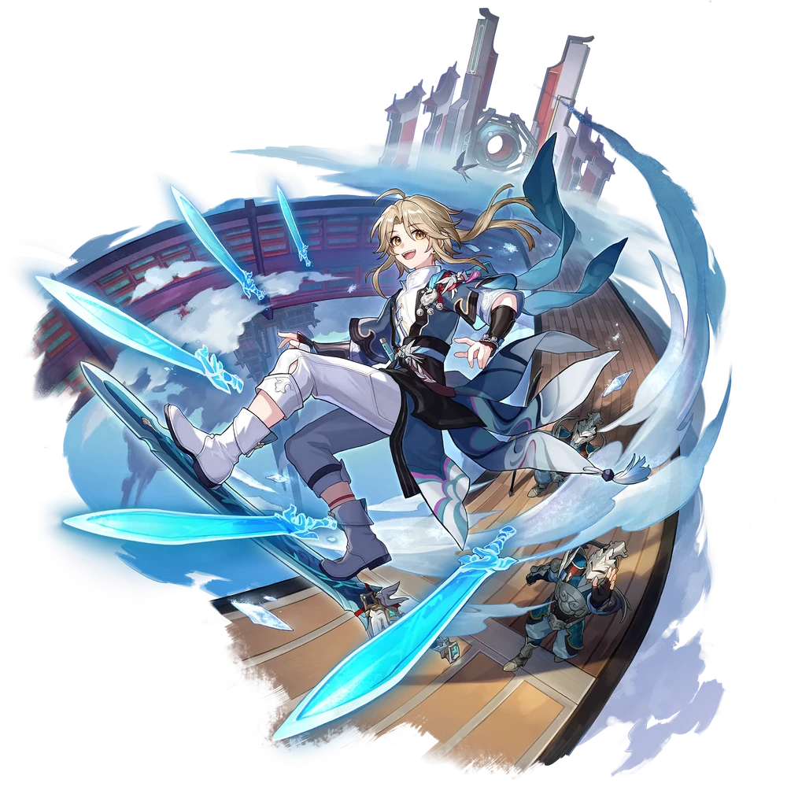

| Nome | Yanqing |
|---|---|
| Elemento | Gelo | Raridade | ✦ ✦ ✦ ✦ ✦ |
| Caminho | A Caça |
| Sexo | Homem |
| Especie | Humano |
| Facção | O Xianzhou Luofu, Aliança de Xianzhou e Cavaleiros das Nuvens | Mundo | O Xianzhou Luofu | Como obter | Personagem Evento Warp, Partida Warp e Stellar Warp | Data de Lançamento | 2023-04-26 | Adicionado pela primeira vez | Versão 0.90 |
Ascensões e estatísticas
| Fase de Ascensão | Level | Base HP | Base ATK | Base DEF | Base SPD |
|---|---|---|---|---|---|
| 0✦ | 1/20 | 121 | 92 | 56 | 109 |
| 20/20 | 236 | 180 | 109<09/td> | 109 | |
| 1✦ | 20/30 | 285 | 217 | 131 | 109 |
| 30/30 | 346 | 263 | 159 | 109 | |
| 2✦ | 30/40 | 394 | 300 | 182 | 109 |
| 40/40 | 455 | 346 | 210 | 109 | |
| 3✦ | 40/50 | 503 | 383 | 232 | 109 |
| 50/50 | 564 | 429 | 260 | 109 | |
| 4✦ | 50/60 | 613 | 466 | 283 | 109 |
| 60/60 | 673 | 512 | 311 | 109 | |
| 5✦ | 60/70 | 722 | 549 | 333 | 109 |
| 70/70 | 783 | 595 | 361 | 109 | |
| 6✦ | 70/80 | 831 | 632 | 384 | 109 |
| 80/80 | 892 | 679 | 412 | 109 |
| Nível | Custo de Evolução | Materiais de Ascensão do Personagem | Materiais Necessários |
|---|---|---|---|
| 0 → 1 ✦ |  4,000 4,000 |
 5 5 |
|
| 1 → 2 ✦ | 8,000 |
10 |
|
| 2 → 3 ✦ | 16,000 |
3 |  6 6 |
| 3 → 4 ✦ | 40,000 |
7 | 9 |
| 4 → 5 ✦ | 80,000 |
20 |  6 6 |
| 5 → 6 ✦ | 160,000 |
35 | 9 |
Habilidades de combate
| Icone | Tipo | Nome | Descrição | Marcação | Energia | Resistência DMG |
|---|---|---|---|---|---|---|
| ATK básico | Espinho de Gelo | Causa Ice DMG igual a 50%–130% do ATK de Yanqing a um único inimigo. | Alvo único | Geração: 20 | 30 | |
| Skill | Darting Ironthorn | Causa Ice DMG igual a 110%–275% do ATK de Yanqing a um único inimigo e ativa Soulsteel Sync por 1 turno. | Alvo único | Geração: 30 | 60 | |
| Ultimate | Em Meio à Felicidade que Chove | Aumenta a taxa CRIT de Yanqing em 60%. Quando o Soulsteel Sync está ativo, aumenta o CRIT DMG de Yanqing em 30% a 60% a mais . Este buff dura um turno. Depois, causa Ice DMG igual a 210%–420% do ATK de Yanqing a um único inimigo. | Alvo único | Custo: 140 Geração: 5 | 90 | |
 |
Talento | Um Com a Espada | Quando o Soulsteel Sync está ativo, é menos provável que Yanqing seja atacado por inimigos. A taxa CRIT de Yanqing aumenta de 15% a 22,5% e seu CRIT DMG aumenta de 15% a 37,5% . Depois que Yanqing ataca um inimigo, há uma chance fixa de 50% a 65% de realizar um ataque de acompanhamento , causando Ice DMG igual a 25% a 62,5% do ATK de Yanqing ao inimigo, que tem 65% de chance base de congelar o inimigo por 1 turno. O alvo Congelado não pode agir e recebe DMG de Gelo Adicional igual a 25%–62,5% do ATK de Yanqing no início de cada turno. Quando Yanqing receber DMG, o efeito Soulsteel Sync desaparecerá. | Alvo único | Geração: 10 | 30 |
| Técnica | A Única Espada Verdadeira | Depois de usar sua técnica, no início da próxima batalha, Yanqing causa 30% a mais de DMG por 2 turno(s) a inimigos cujo HP atual é de 50% ou mais. | Melhorar |
Eidolons
| Icone | Nome da habilidade | Nivel | Descrição |
|---|---|---|---|
| Svelte Sabre | 1 | Quando Yanqing ataca um inimigo Congelado, ele causa DMG de Gelo Adicional igual a 60% de seu ATK. | |
| Serenata Supina | 2 | Quando o Soulsteel Sync está ativo, a taxa de regeneração de energia aumenta em 10%. | |
| Espada Savant | 3 | Habilidade Nv. +2, até um máximo de Lv. 15. ATK Básico Lv. +1, até um máximo de Lv. 10. | |
| Picada Abrasadora | 4 | Quando a porcentagem de HP atual é de 80% ou superior, o Ice RES PEN aumenta em 12%. | |
| Conflito Crescente | 5 | Nível final +2, até um máximo de Lv. 15. Talento Nv. +2, até um máximo de Lv. 15. | |
| Swoop rápido | 6 | Se os buffs do Ultimate ainda estiverem em vigor quando um inimigo for derrotado, sua duração será estendida em 1 turno. |
Traços
| Custo Total (1 → 6 para rastreamento de ATK básico) | ||||||
|---|---|---|---|---|---|---|
| 240.000 |
6 |
7 |
7 |
| Custo total (1 → 10 para um rastreamento) | ||||||||
|---|---|---|---|---|---|---|---|---|
| 652.000 |
9 |
13 |
7 |
.webp) 3 3 |
 1 1 |